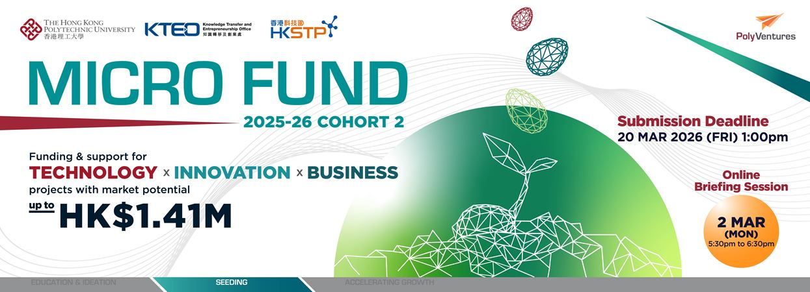

Award | 2025–26
Phagocytex recognized in PolyU MicroFund Cohort 1.

Phagocytex has been selected as an awarded team in the PolyU Micro Fund Scheme 2025–26 Cohort 1, recognising the pCAR-M platform as an innovative technology with strong translational and entrepreneurial potential.
What is the PolyU Micro Fund?
Launched in 2011, the PolyU Micro Fund Scheme is PolyU's first funding initiative dedicated to cultivating an innovative and entrepreneurial spirit within the PolyU community. It supports early-stage startups built on innovative technology solutions and viable business models, guiding teams from initial concept through to venture creation.
For Phagocytex, this recognition supports the team's work to advance peptide-linked CAR-Macrophage technology from academic invention toward a company platform for solid tumour therapy, backed by PolyU's knowledge-transfer ecosystem and HKSTP's world-class innovation infrastructure.
Learn about the MicroFund Scheme View award announcement